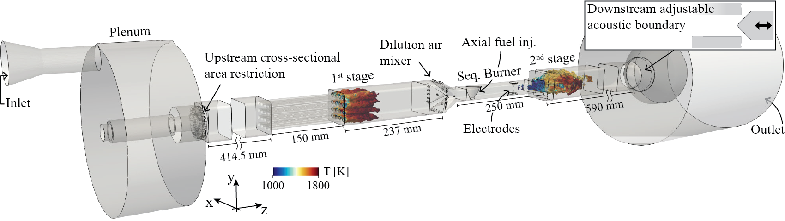
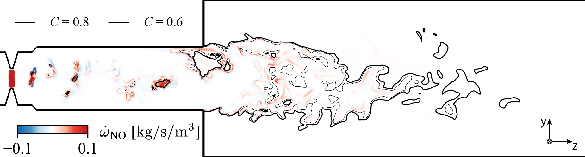

Machine Learning for High-Fidelity Large Eddy Simulation
Large Eddy Simulation (LES) plays a key role in the design of new combustion chambers for robust and safe combustion of carbon-free fuels such as H2. It is a very efficient method which consists of filtering and modeling small-scale flow physics that would otherwise be very computationally expensive to resolve. However, the high molecular diffusion of H2 challenges current subfilter-scale modeling approaches for lean premixed mixtures. This work establishes a framework for data-driven machine learning modeling of LES burning rates, enabling high-fidelity simulation of hydrogen combustion systems that are essential for achieving a low-carbon economy. The data-driven approach leverages a Convolutional Neural Network (CNN), trained to approximate filtered burning rates from emulated LES data. From emulated LES fields, a Convolutional Neural Network (CNN) has been trained to estimate the LES burning rates based on known LES scalar. Once trained, the model was found to approximate the burning rates on solutions never seen during training with high accuracy. In addition to this, the model was able to approximate burning rates on filter sizes and equivalence ratios other than those used for training. More details in this journal publication. The training database is available on Kaggle via BLASTNet.
Diagram of the strategy used to generate data and train the CNN. More details in this journal publication.

Plasma-Assisted Combustion (PAC)
Plasma-assisted combustion using Nanosecond Repetitively Pulsed Discharges (NRPDs) is an emerging technology that enhances the reactivity of fuel-air mixtures, offering significant improvements in operational and fuel flexibility—two crucial features for future sustainable gas turbines. Quentin studied the mecanisms of stabilization using massively parallel Large Eddy Simulation (LES) combined with an accurate description of the combustion chemistry and a state-of-the-art phenomenological model for the non-equilibrium plasma effects. He validated the simulation framework by comparison with experimental data including acoustic pressure and Heat Release Rate (HRR) signals in both stages of the sequential combustor, and OH-planar laser-induced fluorescence images in the second stage combustion chamber. Experimental work was carried out with the expertise of Sergey Shcherbanev. The animation bellow illustrates the simulation results with a stabilization of the thermoacoustically instable sequential combustor by the non-thermal plasma. Figure LES-PAC-FULLSEQCOMB shows the sequential combustor setup used for both experiments and simulation. More details in this journal publication.
Video LES-PAC-FULLSEQCOMB-STABILIZATION: Animation of line of sight averged Heat Release Rate (HRR) along the x-axis from LES snapshots (numerical simulation). The pressure in the first and second stages is plotted live at the top of the animation. Thermoacoustic instability with strong fluctuations in pressure and HRR can be observed, followed by stabilization when plasma discharges are activated in the sequential burner. More details in this journal publication.

Figure LES-PAC-FULLSEQCOMB: Diagram of the sequential combustor used for the experiments and numerical simulations. The temperature colored iso-surfaces of HRR depict the two flames. More details in this journal publication.

Quentin studied PAC to widen the operating window of a gas turbine sequential combustor by extending the lean blow-off limit. He clarified the fundamental mechanisms of the effects of Nanosecond Repetitively Pulsed Discharges (NRPDs) on the sequential flame using Large Eddy Simluation (LES) with a detailed description of the relevant chemistry. Figure LES-PAC-SEQCOMB illustrates the LES computation of PAC inside the sequential combustor studied within the TORCH project at CAPS lab., ETH Zürich. More details in this publication.
Figure LES-PAC-SEQCOMB: Geometry of the second stage of the sequential combustor used for experiments and simulations at CAPS lab., ETH Zürich. A temperature-colored Heat Release Rate (HRR) iso-contour illustrates the production of ignition kernels by the Nanosecond Repetitively Pulsed Discharges (NRPDs). More details in this journal publication.
Although many PAC experiments demonstrated combustion enhancement, several studies report an increase in NOx emissions. Quentin studied the kinetic pathways leading to NOx formation in the second stage of a sequential combustor assisted by Nanosecond Repetitively Pulsed Discharges (NRPDs). For this purpose, Large Eddy Simulation (LES) associated with an accurate description of the combustion/NOx chemistry and a phenomenological model of the plasma kinetics have been used. Figure LES-PAC-NOX shows the production rate of NO in the sequential burner used for this study. More details in this publication.

Figure LES-PAC-NOX: Planar cut through the second stage of the sequential combustor used for experiments and simulations at CAPS lab., ETH Zürich. The planar cut is a snapshot during PAC and is colored by the NO chemical source term with two iso-contours of progress variable C. More details in this journal publication.
Hydrogen Combustion
The development of low NOx hydrogen burners is crucial for the sustainability target of the power/propulsion sector. The concept of LEan Azimuthal Flame (LEAF) has demonstrated promising results for low NOx kerosene/hydrogen combustion by rapidly diluting the reactants with burnt gas and fresh oxidizer. However, there is a lack of understanding of the flame dynamics and the NOx formation routes for H2 LEAF. Therefore, Quentin led a joint experimental and numerical study of the LEAF combustor fueled with hydrogen. Experiments were based on OH-planar laser-induced fluorescence and exhaust gas analysis, performed with the expertise of Khushboo Pandey. Numerical results were based on massively parallel Large Eddy Simulation (LES) with an accurate description of the combustion and NOx chemical kinetics. This study explained the effects of the air distribution on the flame structure and the NOx formation. An optimum AR has been identified to minimize NOx emissions, attributed to the enhancement of the azimuthal whirling flow by the air injected from the bottom. More details in this journal publication.
Figure LES-H2-LEAF: Diagram of the LEAF combustor. Simulation results are used to illustrate the fuel/air injection and the flame. More details in this journal publication.
Hydrogen Enrichment
Hydrogen can be used to reduce the carbon content of conventional fuel in gas turbines. However, this changes the flame structure and may affect the combustion regime inside the combustor. There is therefore research work to be done in order to control the combustion of these new hydrocarbon/hydrogen blends. Figure LES-CH4H2-SEQCOMB shows the Heat Release Rate (HRR) inside the second stage of the sequential combustor studied at CAPS, ETH Zürich, for two cases: FM with neat methane as fuel, and FMH with a methane/hydrogen blend. For the case with hydrogen-enrichment, auto-ignition spots appear inside the mixing channel of the sequential combustor upstream of the deisgn flame position. The simulations have been performed by Matteo Impagnatiello (PhD Student), under the supervision of Quentin Malé and Nicolas Noiray. More details in this publication.
Figure LES-CH4H2-SEQCOMB: Planar cuts colored by the Heat Release Rate (HRR) Q, for both methane (FM, top) and methane/hydrogen (FMH, bottom). Two different instants separated by 0.6 ms are represented, after a statistically steady state has been reached. The inset shows the Thickening Factor (TF) field.
Hydrogen can be used to dope combustion in order to achieve proper combustion of ultra-lean hydrocarbon/air mixtures. Ultra-lean combustion is known to be very efficient and to produce low pollutant emissions. However, it suffers from low burning rates. Quentin studied the effect of hydrogen-enrichment to an ultra-lean propane/air mixture in a Pre-Chamber Ignition (PCI) engine during his PhD work. Figure LES-PCI-HRR-H2 illustrates the ignition and combustion sequence in the PCI engine studied. Hydrogen-enriched combustion is effectively faster than neat propane. However, the design of the pre-chamber has to be optimised to fully leverage the high reactivity of hydrogen to achieve ultra-lean combustion. Figure LES-PCI-PRESS-H2 shows the mean pressure inside both pre- and main chambre of the engine. More details in Quentin's PhD Thesis.
Figure LES-PCI-HRR-H2: Plane cut intersecting the pre-chamber ducts by their axis and coloured by the normalized Heat Release Rate (HRR) with three isolines of temperature for both hydrogen (H2 inj., λ2.0) and propane (C3H8 inj., λ2.0) additional fuelling.
Figure LES-PCI-PRESS-H2: Pressure inside pre- and main chambers for both hydrogen (H2 inj., λ2.0) and propane (C3H8 inj., λ2.0) additional fuelling alongside an unfired main chamber pressure trace.

Turbulent Jet Ignition
Turbulent Jet Ignition (TJI) is the process of ignition of a flammable atmosphere by a high speed jet of hot gas. The process of ignition of cold streams by jets of hot burnt gas is critical in many applications including flameproof enclosures, reciprocating engines, wave rotor engines or pulse detonation engines. The ability to predict ignition success or failure of the flammable mixture in which the hot burnt gas jets penetrate is critical for the design of the ducted jets. Quentin performed three-dimensional, kinetically detailed, Direct Numerical Simulations (DNSs) to investigate the ignition process of a cold lean premixed mixture at atmospheric conditions by a jet of hot burnt gas that may be cooled before injection. DNSs allowed a parametric study of the impact of the jet injection speed and temperature on the ignition process and provided data to build and test models for jet ignition. Figure DNS-TJI depicts the simulated ignition sequences. More details in this journal publication.
Figure DNS-TJI: Direct Numerical Simulation (DNS) of Turbulent Jet Ignition (TJI). Planar cut in the jet axis coloured by the Heat Release Rate (HRR) with three isolines
of temperature. Jet injection bulk velocity = 150.0 m/s. Atmospheric conditions.

Figure COR: Sketch of the Convected Open Reactor (COR) model to predict the outcome of the ignition of an atmosphere by a jet of hot burnt gas. The code of the model is available in the code section.
Quentin studied Pre-Chamber Ignition (PCI) engines during his PhD work. The PCI concept has demonstrated the capability to induce very high burning rates, enabling ultra-lean premixed mixtures to be burnt efficiently in Internal Combustion Engines (ICEs). This is achieved through the creation of multiple highly turbulent jets of hot burnt gas issuing into the main chamber of the engine. However, the design of the ducts connecting pre- and main chamber is very complex: small holes must be used in order to generate enough turbulence in the main chamber, but these small holes can also inhibit the ignition of the main chamber because of too high jet cooling and/or speed. This complex optimization problem motivated the PhD research work. Figures LES-TJI-HRR and LES-TJI-AFBF shows the advantages of PCI engines over conventional Spark Ignition (SI) engines.
Figure LES-TJI-HRR Plane cut intersecting the pre-chamber ducts by their axis and coloured by the normalized Heat Release Rate (HRR) with three isolines of temperature for both Spark Ignition (SI) and Pre-Chamber Ignition (PCI) engines under the same operating conditions, λ1.5.
Figure LES-TJI-AFBF Flame surface inside the main chamber A^mc_f and global Burnt Fraction BF for both Spark Ignition (SI) and Pre-Chamber Ignition (PCI) engines under the same operating conditions, λ1.5.
Figure PEMIP: Sketch of the Pre-chamber Engine Model with Ignition Prediction (PEMIP) multi-zone engine model for pre-chamber engines. The code of the model is available in the code section.